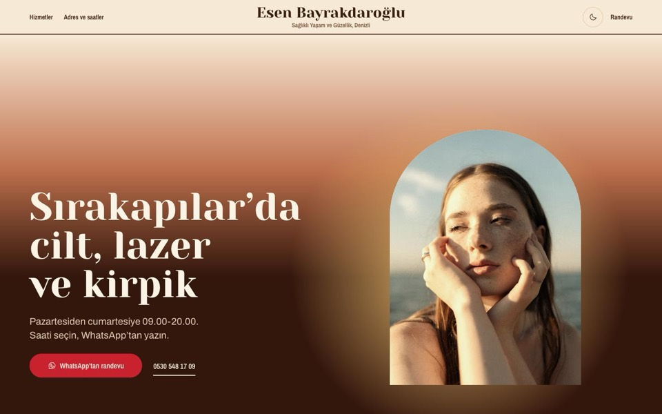
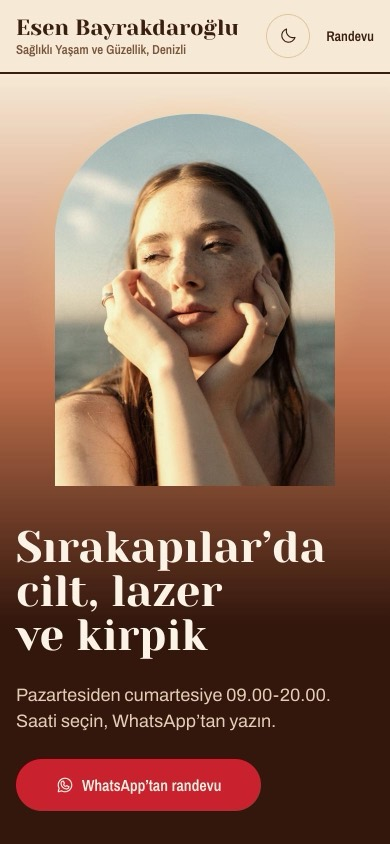
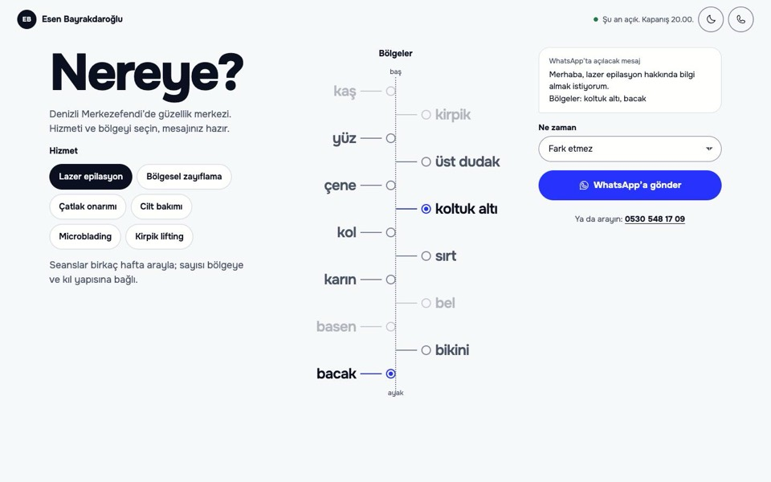
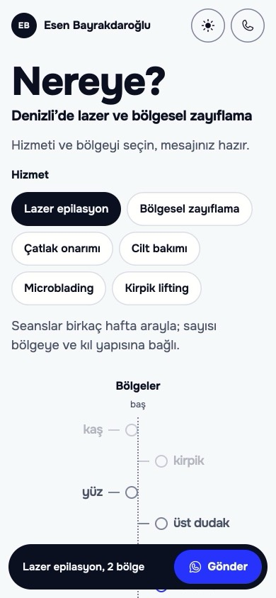
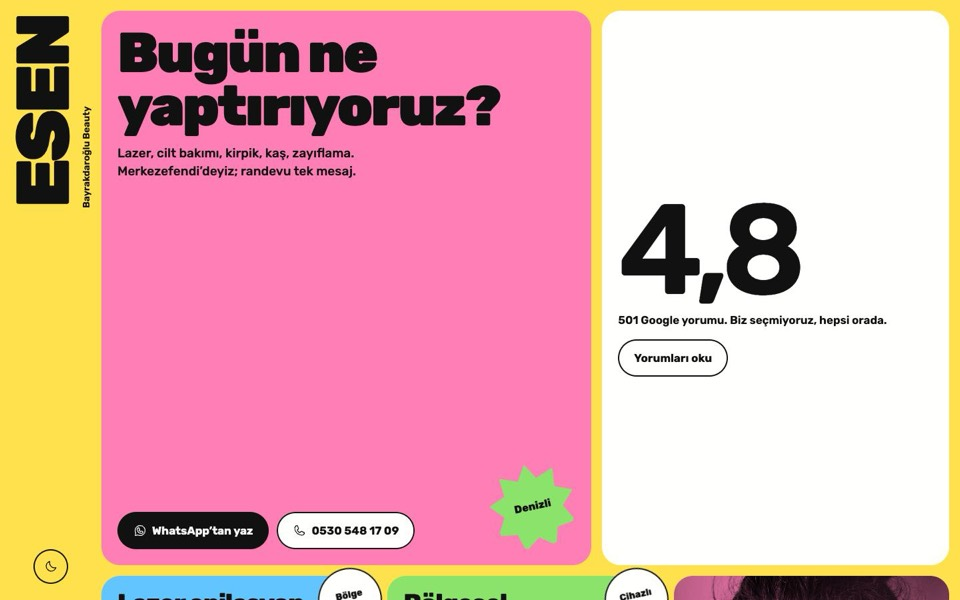
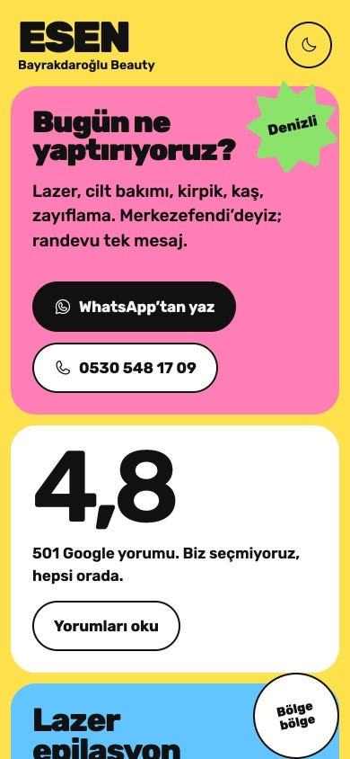
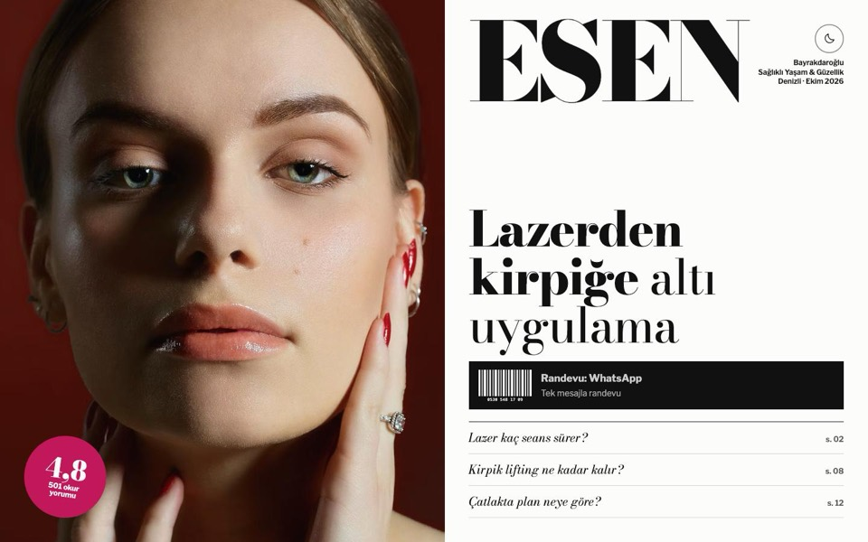
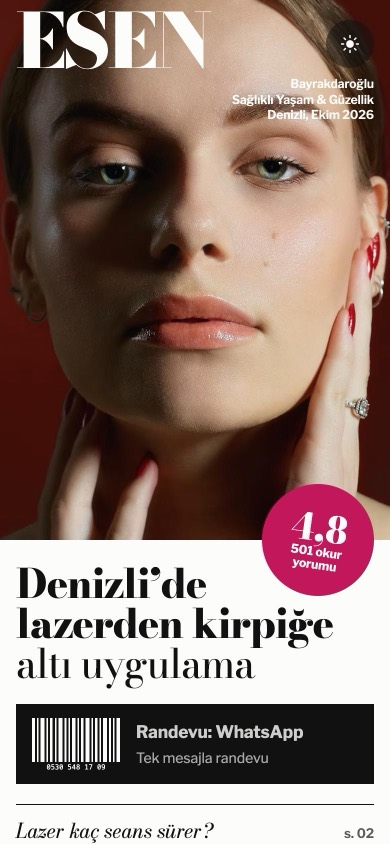
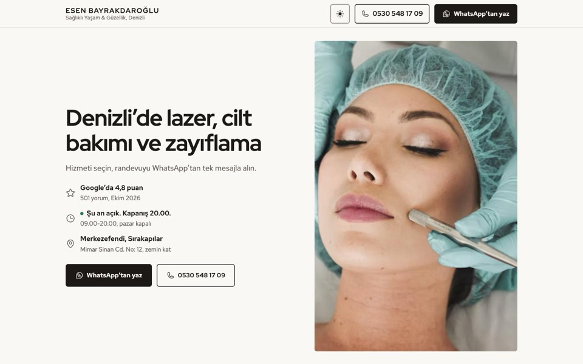
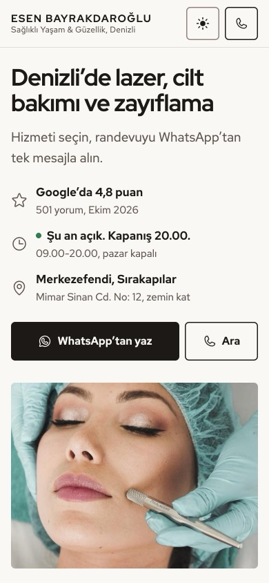

Esen Bayrakdaroğlu için beş yön
Her biri ayrı bir görsel dil ve ayrı bir sayfa kurgusu. Hepsinde WhatsApp’a hazır mesaj, arama, adres, saatler ve Google puanı var.


Işık
Kremden koyu kahveye inen bir gökyüzü, arkada alçak güneş, kemer içinde sıcak ışıkta portre; altın çizgili hizmet etiketi. İmzası günün saatleri tek çizgide: 09.00’dan 20.00’ye bir saat seçilir, WhatsApp mesajı o saatle açılır, şu anki saat güneş renginde.
Demoyu gör

Harita
Site bir broşür değil, kullanılan bir araç. Hizmeti seçersiniz, baştan ayağa dizili bölgelerden kendinizinkileri işaretlersiniz; mesaj kendiliğinden yazılır. Lazer ve zayıflama müşterisinin ilk sorusu "hangi bölge?"; merkez de ilk mesajda bölgeyi öğrenir.
Demoyu gör

Şeker
Starface ve Bubble gibi gençlere hitap eden markaların dili: bağıran renk blokları, dönük çıkartmalar, iki renkli fotoğraflar, dikey logo. Instagram’dan gelen genç kitleye ve kampanya duyurularına uygun; her hizmet kendi renginde.
Demoyu gör

Dergi
Site bir güzellik dergisinin sayısı: kapak, içindekiler, her hizmet bir yazı, sonunda kupon, iletişim bilgileri künye. Randevu düğmesi kapaktaki barkod. Bakımlı, iddialı bir marka görüntüsü isteyen merkeze uygun.
Demoyu gör

Net
İlk hazırlanan yön. Klasik bölüm sırası: giriş, hizmet seçici, randevu formu, galeri, sorular, adres. En az riskli, ama sektördeki diğer sitelere en çok benzeyen.
Demoyu gör